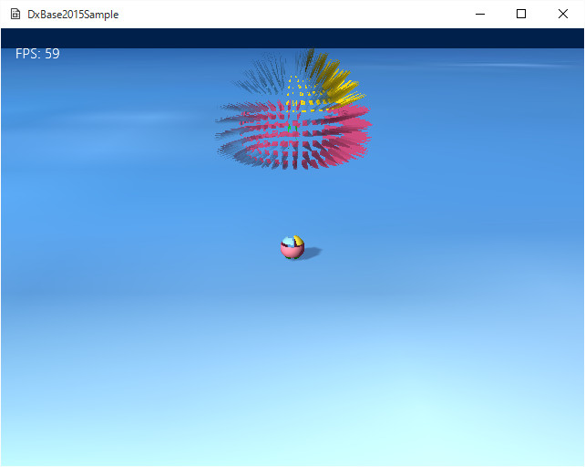

４０９．ジオメトリシェーダの利用２
三角形から四面体を作成する
ジオメトリシェーダの利用方法として、もう一つ、
三角形から四面体を作成するサンプルを紹介します。
このサンプルは
マイクロソフト社のDirectX11チュートリアルサンプルを、少し修正した
ジオメトリシェーダを使用しています。
Sample409ディレクトリのソリューションを開き、リビルド実行すると以下の画面が現れます。

図4009a
画面奥に、ギザギザになりながら回転する球体があります。この
ギザギザにする処理をジオメトリシェーダによって行ってます。
ポイントは、
GSBall.hlslの以下の部分です。
float3 faceEdgeA = input[1].Pos.xyz - input[0].Pos.xyz;
float3 faceEdgeB = input[2].Pos.xyz - input[0].Pos.xyz;
float3 faceNormal = normalize(cross(faceEdgeA, faceEdgeB));
float3 ExplodeAmt = faceNormal*Explode;
この赤くなっているところの処理で、三角形の２辺から外積を計算し法線を導き出します。
その後、その法線方向に距離（Explode）を伸ばし飛び出す頂点を計算します。
そうして作成した頂点に向かって、三角形の各頂点から新たな三角形を作って、出力します。こうして、
飛び出す頂点を作成しています。
ほかの、シェーダを作成したり、あるいはcppから呼び出す方法などは、これまでのサンプルでもいろいろ紹介しましたのでそちらを参照ください。
ジオメトリシェーダは、前項の、
あらたに三角形を別の場所に作る方法と、このサンプルのように、
渡された三角形を変形（あるいは利用して）、あらたな頂点そして三角形を作る方法があります。
このサンプルの手法を応用すると、たとえば、１つの四角形（つまり２つの三角形）を２つ、４つ、８つのように分解していって、１つの立方体を８×８×８の立方体に分解するような処理も可能です。
前項にも述べましたが、ジオメトリシェーダの利用は
アイディア次第です。いろいろ挑戦してみましょう。